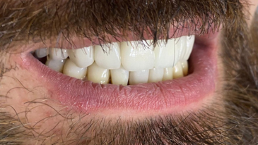
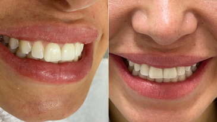
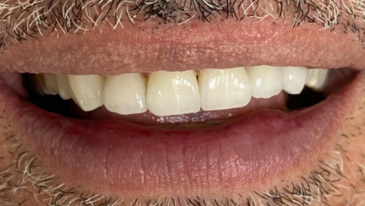
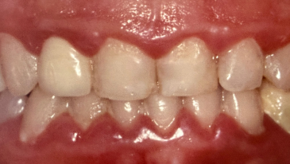
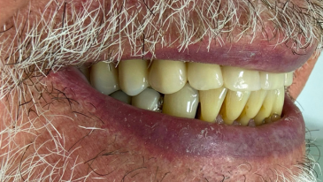

O Centro Odontológico de Reabilitação Rabello é referência de qualidade e atendimento acolhedor. Sob a liderança experiente da Dra. Flávia Rabello de Mattos, devolvemos a saúde, estética e funcionalidade do seu sorriso.
Oferecemos soluções completas e de alta tecnologia para trazer saúde, beleza e funcionalidade ao seu sorriso.

Recupere dentes perdidos com total segurança, estabilidade e um sorriso natural que devolve sua qualidade de vida e prazer de comer.
Saiba Mais →
Previna doenças de forma ativa, elimine placa e tártaro e mantenha seus dentes e gengivas sempre saudáveis e limpos.
Saiba Mais →
Transforme de vez a estética do seu sorriso com naturalidade, corrigindo a cor, formato, pequenos desalinhamentos e imperfeições.
Saiba Mais →
Reconstrua a moldura do seu sorriso com tratamentos que protegem as raízes, harmonizam as proporções e devolvem autoestima.
Saiba Mais →
Recupere dentes com cáries ou pequenas fraturas rapidamente, preservando a função mastigatória, a resistência e a estética original.
Saiba Mais →Oferecemos também atendimento completo em:
O Centro Odontológico de Reabilitação Rabello, localizado na Tijuca – Rio de Janeiro, é referência absoluta para quem busca atendimento odontológico qualificado e humanizado.
Com mais de 30 anos de atuação dedicada, a clínica é liderada pela Dra. Flávia Rabello de Mattos: especialista, mestre e doutora, reconhecida pela excelência em implante dentário, reabilitação oral de alta complexidade e odontologia estética.
Nosso consultório está equipado com tecnologias modernas para oferecer diagnósticos precisos e tratamentos confortáveis, visando devolver a beleza, funcionalidade e harmonia que o seu sorriso merece.
Anos de Experiência
& Doutorado Clínico
Confira a experiência de quem já passou pelo Centro de Reabilitação Rabello na Tijuca e transformou a forma de sorrir.
"Dra. Flávia é maravilhosa! Super atenta aos detalhes, carinhosa e preocupada com nosso bem estar. Consultório bem pertinho do metrô e de fácil acesso. A secretária Cristina, tbm muito atenciosa e educada. Super recomendo!"
"A Dra. Flavia e sua equipe são excepcionais, estou passando por um tratamento ortodôntico e o tempo todo me sinto assistida e cuidada. O ambiente do consultório é acolhedor, confortável e muito limpo."
"A clínica da doutora Flávia é maravilhosa em todos os aspectos. Tanto a recepção, o ambiente e a consulta. Com atendimento atencioso e ágil. Sem atrasos. Excelente para o acompanhamento dos sorrisos."
"Tenho mais de 20 anos com a doutora Flávia ela é maravilhosa, fiz meus implantes dentários com ela e fiquei muito satisfeita é uma profissional de excelência."
Preparamos respostas diretas para as perguntas mais comuns que chegam ao nosso consultório na Tijuca.
Não. O procedimento de implante é realizado sob anestesia local rigorosa, sendo totalmente indolor durante a cirurgia. O desconforto pós-operatório é leve e perfeitamente controlado por meio de medicação simples. Cada etapa é conversada previamente.
Ambas servem para recuperar e melhorar o visual do sorriso. A lente é extremamente fina e requer pouquíssimo ou nenhum desgaste do dente, ideal para correções sutis. A faceta é ligeiramente mais espessa, indicada para dentes com alterações maiores de cor, forma ou restaurações antigas.
Não, desde que seja realizado com o acompanhamento de um cirurgião-dentista. O gel clareador atua especificamente nos pigmentos internos do dente, clareando-os, sem alterar a microestrutura do esmalte de forma nociva. Evite receitas milagrosas caseiras sem supervisão.
Sim, na grande maioria dos casos clínicos. Os alinhadores estéticos transparentes reposicionam os dentes com a mesma eficiência do aparelho convencional, porém de modo muito mais confortável, higiênico e estético para a sua rotina social e profissional.
É o conjunto de procedimentos que visa recuperar a saúde bucal global de forma funcional e estética, tratando o paciente como um todo e não focado apenas em dentes isolados. Envolve implantes, próteses, ortodontia e estética combinados. É a maior especialidade do nosso consultório na Tijuca.
Nossa equipe está pronta para realizar uma avaliação completa e indicar o tratamento mais seguro para o seu sorriso na Tijuca.
AGENDE SUA AVALIAÇÃO